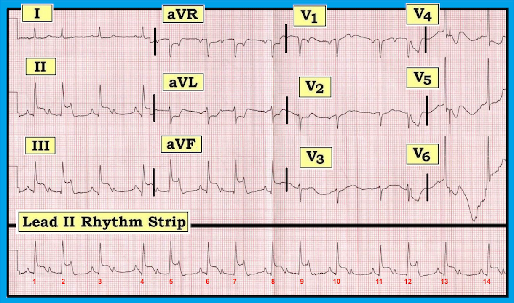
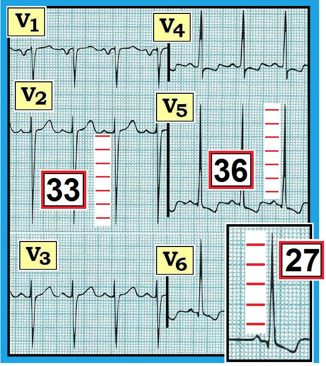
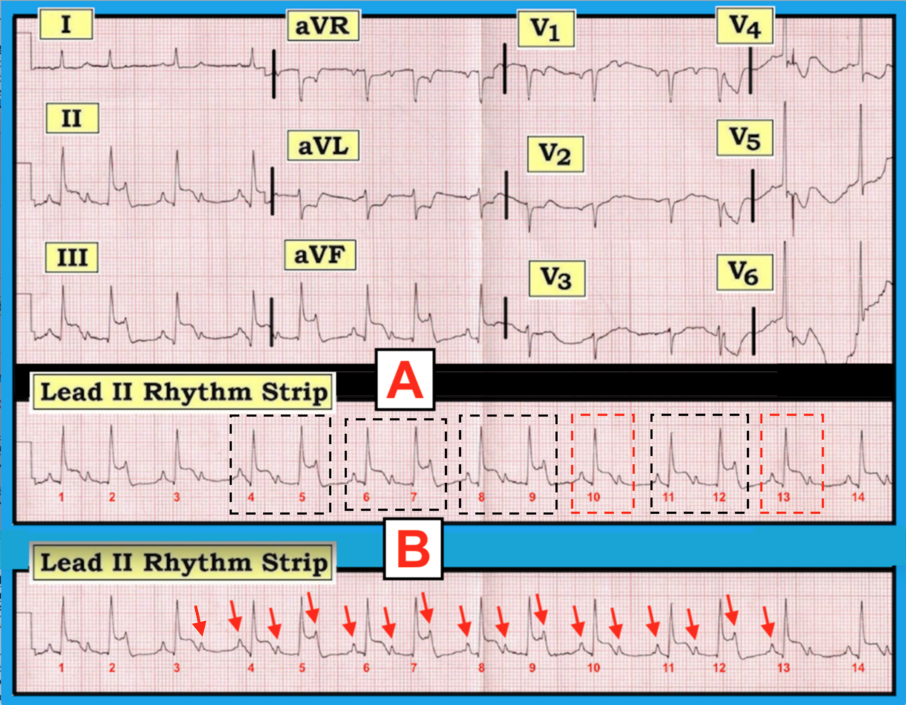
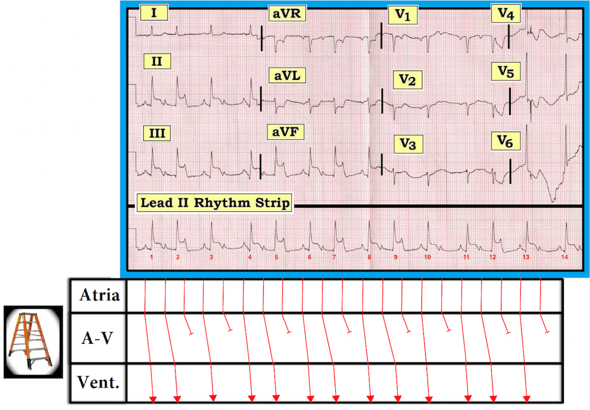
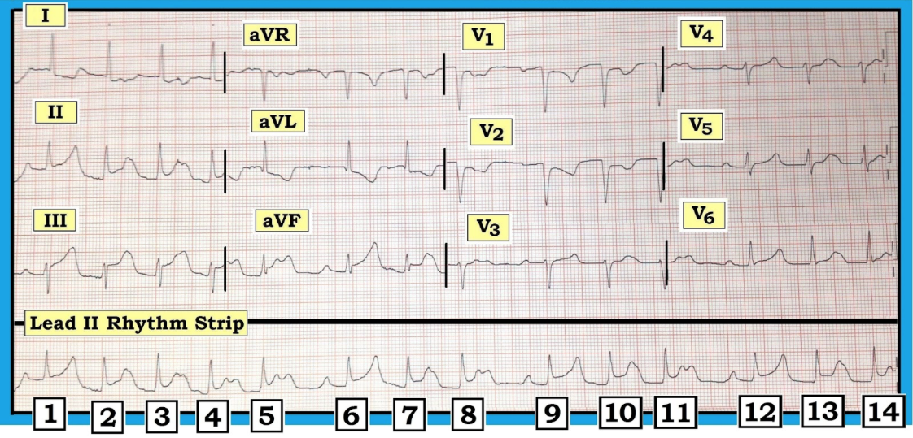

ECG Blog #154 — Nhồi máu cơ tim thành dưới và nhịp theo nhóm ...
Điện tâm đồ trong Hình-1 được ghi ở một bệnh nhân đau ngực mới xuất hiện. Bệnh nhân ổn định huyết động vào thời điểm ghi bản ghi này.
- Bạn sẽ đọc nhịp này và phần còn lại của điện tâm đồ này như thế nào?
- LƯU Ý: Ngoài nhiễu thấy rõ nhất ở các chuyển đạo trước tim bên — còn có 4 Dấu hiệu Chính. Phải thừa nhận rằng hai trong số các dấu hiệu này khá kín đáo. Bạn nhận ra được bao nhiêu trong số 4 dấu hiệu này?


DIỄN GIẢI: Như thường lệ, một khi đã chắc chắn bệnh nhân ổn định huyết động — Chúng tôi bắt đầu Cách tiếp cận hệ thống bằng việc đánh giá Tần số & Nhịp.
- Tần số & Nhịp —Nhịp trên bản ghi này phức tạp — nên chúng ta sẽ tạm hoãn việc diễn giải đầy đủ trong giây lát. Như chúng ta sẽ thấy ngay sau đây, trong ca bệnh này việc trì hoãn phân tích chi tiết nhịp thực sự có ích về mặt lâm sàng — vì một trong những gợi ý lớn nhất để diễn giải nhịp này nằm ở những gì chúng ta tìm thấy trong phần còn lại của điện tâm đồ 12 chuyển đạo!
- Điều hiển nhiên về nhịp này — là nhịp thất khá nhanh — là có hoạt động nhĩ — và, khi lùi lại nhìn tổng thể bản ghi một chút, có một kiểu hình lặp lại = nhịp theo nhóm (group beating). Tức là, có các nhóm 2 nhát và thỉnh thoảng chỉ có 1 nhát. Điều này hẳn đã rõ là không phải do ngẫu nhiên, vì khoảng cách sau các nhóm 2 nhát cho đến khi nhóm kế tiếp bắt đầu luôn luôn bằng nhau! (tức là, khoảng R-R giữa các nhát #2-3; giữa #5-6; giữa #7-8; 9-10; và 12-13 là bằng nhau)! Tương tự, khoảng cách sau các nhóm 1 nhát cho đến khi nhóm kế tiếp bắt đầu cũng bằng nhau! (tức là, khoảng R-R giữa các nhát #3-4; giữa #10-11; và giữa #13-14 là bằng nhau)!
- ĐIỂM THEN CHỐT (PEARL) #1: Sự hiện diện của nhịp theo nhóm luôn luôn phải khiến bạn nghĩ đến khả năng có một kiểu blốc Wenckebach nào đó.
- Ở thời điểm này của quá trình diễn giải — Chúng tôi đề nghị tạm hoãn việc đánh giá thêm nhịp tim cho đến sau khi bạn đã xem xét phần còn lại của điện tâm đồ 12 chuyển đạo. Suy cho cùng, bệnh nhân này đến khám vì đau ngực mới khởi phát — và ngay cả trước khi xem xét kỹ các “chi tiết”, có vẻ như đang có điều gì đó cấp tính xảy ra! Tiếp tục với Cách tiếp cận hệ thống — Chúng tôi ghi nhận như sau:
- Các khoảng —Khoảng PR có vẻ thay đổi — tuy vậy, cần lưu ý rằng khoảng PR hằng định và bình thường ở đầu mỗi nhóm nhỏ trên bản ghi này (tức là, khoảng PR trước các nhát #1, 3, 4, 6, 8, 10, 11, 13 và 14 bình thường và bằng nhau)! Phức bộ QRS bình thường (tức là, thời gian không quá nửa ô lớn) — do đó, đây là nhịp trên thất. Khoảng QT có vẻ không kéo dài — dù tần số không đều khiến việc đánh giá điều này khó khăn.
- Trục —Trục mặt phẳng trán bình thường (khoảng +75 độ).
- Lớn các buồng tim — Sóng P nhọn ở mỗi chuyển đạo dưới — nhưng chưa đủ cao để đạt tiêu chuẩn RAA (bất thường nhĩ phải — Right Atrial Abnormality), vì sóng P cao chưa tới nửa ô lớn. Sóng P ở chuyển đạo V1 có thành phần âm khá sâu — đạt tiêu chuẩn LAA (bất thường nhĩ trái — Left Atrial Abnormality). Đáng chú ý — LVH (phì đại thất trái — Left Ventricular Hypertrophy) có lẽ hiện diện! Mặc dù không tiêu chuẩn nào trong 2 tiêu chuẩn điện thế thường dùng nhất cho LVH được thỏa mãn trên bản ghi này (tức là, S sâu nhất ở V1,V2 + R cao hơn ở V5,V6 ≥35mm – hoặc – R ở aVL ≥12mm) — tiêu chuẩn điện thế cho LVH lại được thỏa mãn ở chuyển đạo V6 (R ở V6 ≥18-20mm). Và mặc dù rõ ràng có nhiều trôi đường nền + nhiễu ở các chuyển đạo V4-đến-V6 — sóng ST-T ở các chuyển đạo này gợi ý có thể có “tăng gánh” thất trái (LV “strain”). Nhận ra khả năng có LVH trên bản ghi này là dấu hiệu thứ 1 trong 4 dấu hiệu chính hiện diện. Chúng tôi nghĩ rằng nhiều người đọc có thể bỏ sót dấu hiệu này.
- Thay đổi Q-R-S-T —Có sóng q nhỏ ở mỗi chuyển đạo dưới. Ngoài ra, các chuyển đạo II, III và aVF cho thấy rõ ST chênh lên (ít nhất 3-4mm) — đi kèm với ST chênh xuống soi gương (reciprocal) ở chuyển đạo aVL. Ở một bệnh nhân đau ngực mới xuất hiện — các dấu hiệu này ở chuyển đạo chi có giá trị chẩn đoán STEMI thành dưới cấp, đây là dấu hiệu thứ 2 trong 4 dấu hiệu chính trên điện tâm đồ này. Ngoài ra — vùng chuyển tiếp diễn ra bình thường trên bản ghi này (tức là, sóng R trở nên cao hơn độ sâu của sóng S ở khoảng giữa chuyển đạo V3-đến-V4). Và mặc dù thấy phức bộ QS ở chuyển đạo V1 và V2 — vẫn thấy sóng r khởi đầu nhỏ-nhưng-rõ ràng ở chuyển đạo V3. Do đó chúng tôi không cho rằng bệnh nhân này đã từng bị nhồi máu thành trước. Thay vào đó, chúng tôi cho rằng sự hiện diện của LVH giải thích cho việc thiếu sóng r khởi đầu ở V1, V2.
-------------------------------------------------------------------------
BÌNH LUẬN: Chúng tôi nghĩ “động mạch thủ phạm” trong ca bệnh này là RCA (động mạch vành phải — Right Coronary Artery) bị tắc cấp — vì: i) Ở ~80-90% bệnh nhân — tuần hoàn vành ưu thế phải (RCA ưu thế), nghĩa là phần lớn các ca nhồi máu cơ tim thành dưới cấp là do tắc cấp RCA chứ không phải LCx (động mạch mũ trái — Left Circumflex Artery); ii) Mức ST chênh lên ở chuyển đạo III > chuyển đạo II (điều ngược lại thường đúng khi tắc cấp LCx); và, iii) Có ST chênh xuống soi gương đáng kể ở chuyển đạo aVL (điều này ít gặp hơn khi tắc cấp LCx).
-------------------------------------------------------------------------
CÂU HỎI: Trong đa số trường hợp STEMI thành dưới cấp — sẽ có ST chênh xuống ở các chuyển đạo trước do tổn thương thành sau cấp đi kèm.
- Điều gì có thể lý giải việc hầu như KHÔNG có ST chênh xuống ở thành trước trong các chuyển đạo V1, V2 hay V3 của Hình-1?
T
RẢ LỜI: Điểm MẤU CHỐT cần nhớ là điện tâm đồ phản ánh sự “cân bằng” giữa các lực đối nghịch diễn ra khắp quả tim. Như đã nhấn mạnh ở trên — có lẽ có LVH + “tăng gánh”, dựa trên hình dạng phức bộ QRS và sóng ST-T ở chuyển đạo V5 và V6.
- Ở bệnh nhân có LVH + “tăng gánh” rõ — các chuyển đạo trước thường cho thấy hình ảnh ngược lại (hình ảnh soi gương) của các thay đổi sóng ST-T thấy ở các chuyển đạo trước tim bên. Chúng tôi minh họa điều này trong Hình-2 — lấy từ ECG Blog #73 của chúng tôi về tiêu chuẩn điện tâm đồ cho LVH.
- Quay lại với điện tâm đồ trong Hình-1. Hiếm khi thấy sóng ST-T gần như dẹt ở các chuyển đạo trước của một bệnh nhân có ST chênh lên ở thành dưới nhiều như trong Hình-1. Là dấu hiệu chính thứ 3 trong ca bệnh này — chúng tôi nghĩ có nhồi máu cơ tim thành sau cấp đi kèm. Với sự hiện diện của “tăng gánh” thất trái ở V5, V6 — bản ghi nền của bệnh nhân này nhiều khả năng biểu hiện sóng ST-T dương nổi bật ở các chuyển đạo trước (tương tự như ở chuyển đạo V2 và V3 trong Hình-2). Do đó, khi RCA bị tắc cấp — đã xảy ra STEMI dưới-sau cấp và có lẽ đã gây ST chênh xuống ở thành trước, mà chúng tôi nghĩ đã bị làm giảm bớt bởi sóng ST-T dương nổi bật vốn rất hay gặp ở các chuyển đạo trước của bệnh nhân LVH.


-------------------------------------------------------------------------
Quay lại với NHỊP trong ca bệnh này: Chúng ta vừa chẩn đoán STEMI thành dưới cấp (nhiều khả năng kèm tổn thương thành sau cấp) — có lẽ là hậu quả của tắc cấp RCA.
- ĐIỂM THEN CHỐT (PEARL) #2: Bất cứ khi nào bạn thấy nhịp theo nhóm ở bệnh nhân STEMI thành dưới cấp — khả năng rất cao là blốc AV độ 2, Mobitz loại I (= Wenckebach AV) là nguyên nhân gây ra nhịp theo nhóm! Nhận thức được thực tế lâm sàng này giúp việc phân tích nhịp cẩn thận hơn trở nên dễ dàng hơn nhiều.
- Vượt ra ngoài phần cốt lõi: Nguyên nhân của nhịp theo nhóm trong nhồi máu cơ tim thành dưới cấp đặc biệt có khả năng là Wenckebach AV khi không có khoảng R-R nào dài hơn gấp đôi khoảng R-R ngắn nhất trên bản ghi!
- Để dễ theo dõi — chúng tôi khoanh các nhóm nhát trên dải nhịp chuyển đạo II dài. Các hình chữ nhật nét chấm ĐEN đánh dấu các nhóm 2 nhát — và các hình chữ nhật nét chấm ĐỎ đánh dấu các nhóm 1 nhát (Ô A trong Hình-3). Như đã nêu ở trên — chúng ta BIẾT đây là “nhịp theo nhóm” thật sự — vì mọi nhóm 2 nhát đều giống nhau, và mọi nhóm 1 nhát cũng giống nhau.
- ĐIỂM THEN CHỐT (PEARL) #3: Bước đơn giản là dùng compa đo và đánh dấu sóng P luôn giúp tôi nhận ra các rối loạn nhịp phức tạp hiệu quả đến đáng kinh ngạc. Để xác định XEM nhịp nhĩ nền có đều không — tôi bắt đầu với một khoảng R-R mà trong đó tôi thấy được 2 sóng P. Điều này cho tôi biết khoảng P-P sẽ là bao nhiêu (tức là, khoảng cách giữa 2 mũi tên ĐỎ đầu tiên trong Ô B của Hình 3). Đặt compa chính xác bằng khoảng cách này — và xem bạn có thể “dò” ra hoạt động nhĩ đều suốt bản ghi hay không. Các mũi tên ĐỎ trong Hình-3 cho thấy chúng ta làm được!
- Chúng ta đã ghi nhận rằng khoảng PR hằng định và bình thường ở đầu mỗi nhóm nhỏ trên bản ghi này (tức là, khoảng PR trước các nhát #1, 3, 4, 6, 8, 10, 11, 13 và 14 bình thường và bằng nhau). Điều này cho chúng ta biết CÓ dẫn truyền!
- NẾU giờ chúng ta tập trung chú ý vào bên trong các nhóm 2 nhát (tức là, bên trong các hình chữ nhật nét chấm ĐEN) — sẽ thấy rõ khoảng PR tăng dần cho đến khi một nhát bị rớt. Ví dụ — khoảng PR trước nhát #5 dài hơn khoảng PR trước nhát #4 — và rồi sóng P kế tiếp (nằm trong, và làm nhọn đỉnh sóng T của nhát #5) không được dẫn truyền. Chu kỳ sau đó bắt đầu lại với khoảng PR ngắn lại trước nhát #6.
- Do đó nhịp này là blốc AV độ 2, Mobitz loại I (= Wenckebach AV), với dẫn truyền AV luân phiên 3:2 và 2:1. Chúng tôi xác định các tỷ lệ dẫn truyền này dựa trên việc: với các nhóm nằm trong hình chữ nhật ĐEN — có 3 sóng P, nhưng chỉ 2 sóng được dẫn truyền (tức là, dẫn truyền AV 3:2). Và, trong các hình chữ nhật ĐỎ — có 2 sóng P, nhưng chỉ 1 sóng được dẫn truyền (tức là, dẫn truyền AV 2:1). LƯU Ý: Nhịp này là dấu hiệu chính thứ 4 trong ca bệnh này!


-------------------------------------------------------------------------
Minh họa nhịp bằng GIẢN ĐỒ BẬC THANG (LADDERGRAM): Chúng tôi kết thúc bài blog này bằng một giản đồ bậc thang của nhịp (Hình-4). Mặc dù việc dựng giản đồ bậc thang có thể khá phức tạp khi nhịp khó — chúng tôi nhấn mạnh rằng đọc một giản đồ bậc thang đã được dựng sẵn cho bạn thì DỄ.
- Các đường dọc ĐỎ trong Hình-4 thể hiện tần số nhĩ nền đều. Lưu ý mỗi đường dọc ở Tầng Nhĩ nằm ngay dưới sóng P tương ứng trên dải nhịp chuyển đạo II dài.
- Tiếp theo hãy tập trung vào Tầng Thất. Mỗi đường có mũi tên tương ứng với sự dẫn truyền một phức bộ QRS qua tâm thất.
- Cuối cùng — Hãy xem tầng giữa = Tầng Nút AV minh họa cơ chế Wenckebach như thế nào. Trong mỗi nhóm 2 nhát (tức là, các nhát #1-2; 4-5; 6-7; 8-9; và 11-12) — độ nghiêng tăng dần. Điều này tương ứng với khoảng PR dài dần trong một nhóm cho đến khi một nhát bị rớt — và rồi, khoảng PR ngắn lại (độ nghiêng giảm) khi chu kỳ kế tiếp bắt đầu.


-------------------------------------------------------------------------
TÓM TẮT CA BỆNH: Đây thực sự là một điện tâm đồ khó đọc — với 4 dấu hiệu chính: i) STEMI thành dưới cấp; ii) có lẽ LVH kèm “tăng gánh”; iii) có lẽ nhồi máu thành sau cấp đi kèm; và iv) blốc AV độ 2, Mobitz loại I ( = Wenckebach AV), với dẫn truyền AV luân phiên 3:2 và 2:1.
- 2 dấu hiệu quan trọng nhất cần nắm là diễn giải nhịp tim, và nhận ra STEMI cấp. Điểm cộng cho bạn nếu bạn nhận ra LVH và nhồi máu thành sau đi kèm.
- Trong số các “Điều cần nhớ” quan trọng nhất của ca bệnh này là học cách nhận ra hiện tượng nhịp theo nhóm — và, hiểu rằng một khi bạn thấy nhịp theo nhóm thật sự trong bối cảnh STEMI thành dưới cấp — nguyên nhân nhiều khả năng nhất của nhịp sẽ là Mobitz I. Khi đã thực hành — việc nhận ra điều này thật sự chỉ mất không quá vài giây! Sau đó bạn có thể xác nhận Mobitz I đúng là nguyên nhân của nhịp bằng cách: i) Dùng compa đo để xác nhận có các sóng P đều; và, rồi ii) Tập trung chú ý vào bên trong mỗi nhóm nhát để xem khoảng PR có dài dần cho đến khi một nhát bị rớt hay không — trước khi chu kỳ kế tiếp khởi động lại với khoảng PR ngắn lại.
- THỬ THÁCH: Hãy thử kỹ năng mới học được bằng cách đọc điện tâm đồ 12 chuyển đạo và dải nhịp trong Hình-5. Phần đánh giá chi tiết bản ghi này được giải thích (và minh họa bằng giản đồ bậc thang) trong ECG Blog #55 của chúng tôi.


-------------------------------------------------------------------------
LỜI CẢM ƠN: Xin cảm ơn Gëzim Berisha đến từ Kosovo-Prishtina, đã cho phép tôi sử dụng bản ghi và ca lâm sàng này.
-------------------------------------------------------------------------

-------------------------------------------------------------------------
LƯU Ý: Các bài blog và tài liệu tham khảo sau cung cấp thêm thông tin về các chủ đề được đề cập trong ca bệnh này:
- Video điện tâm đồ dài 1 giờ của chúng tôi về Kiến thức cơ bản về blốc AV = LINK DỄ NHỚ = www.avblockecg.com — LƯU Ý: Nếu bạn bấm vào SHOW MORE (trên trang YouTube, bên dưới video) — bạn sẽ thấy Mục lục chi tiết có liên kết, giúp nhanh chóng tìm đến bất kỳ phần nào của video mà bạn muốn xem lại!
- Cách tiếp cận hệ thống mà chúng tôi đề xuất để đọc điện tâm đồ 12 chuyển đạo — Xem ECG Blog #93.
- Minh họa từng bước CÁCH Vẽ giản đồ bậc thang — Xem ECG Blog #69.
- Đây là một vài ca Nhồi máu cơ tim cấp + blốc AV — Xem ECG Blog #48 và Blog #55.
- Bấm VÀO ĐÂY — Để tải miễn phí Phần 20 (từ ACLS-2013-ePub) của chúng tôi về Blốc AV/Phân ly nhĩ thất.
- Ôn lại tiêu chuẩn điện tâm đồ cho Bất thường nhĩ (trong ECG Blog #75) — và cho LVH (trong Blog #73).